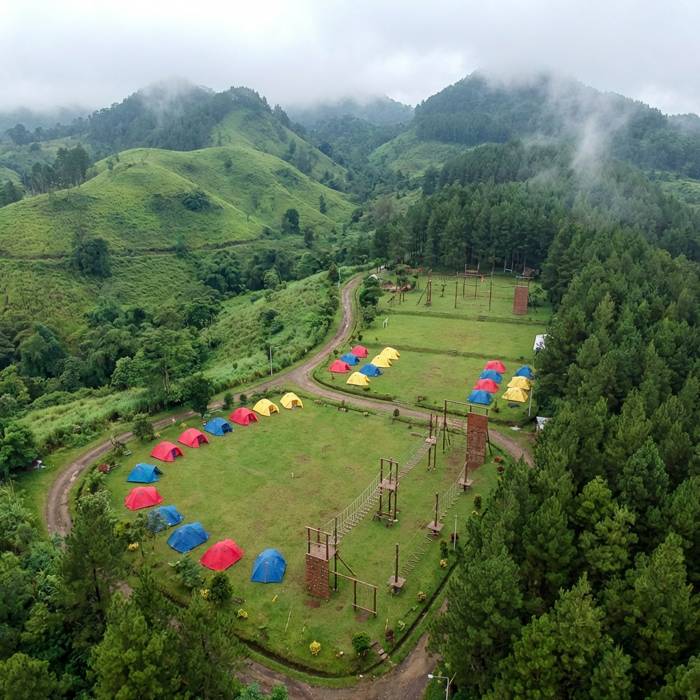

Memilih lokasi yang tepat untuk program outbound effective leadership adalah langkah krusial yang menentukan keberhasilan seluruh kegiatan. Batu Malang, dengan keindahan alam pegunungannya dan infrastruktur yang lengkap, menjadi salah satu destinasi paling populer untuk penyelenggaraan outbound leadership di Indonesia. Namun, tidak semua lokasi di Batu cocok untuk setiap jenis program.
Sebagai provider outbound leadership berpengalaman di Batu Malang, Gemilang Katun Outbound telah mengeksplorasi dan mengevaluasi puluhan lokasi outbound di kawasan ini. Dalam artikel ini, kami akan membagikan tips dan panduan lengkap untuk membantu Anda memilih lokasi outbound yang ideal di Batu Malang berdasarkan pengalaman kami menangani lebih dari 500 event.
Mengapa Batu Malang Ideal untuk Outbound Leadership?
Sebelum membahas tips memilih lokasi, penting untuk memahami mengapa Batu Malang menjadi destinasi favorit untuk outbound leadership. Kota Wisata Batu terletak di ketinggian 700-1.700 mdpl dengan suhu udara rata-rata 15-25°C, menjadikannya tempat yang sangat nyaman untuk kegiatan outdoor sepanjang hari.
Selain itu, Batu Malang memiliki topografi yang bervariasi — mulai dari dataran tinggi, perbukitan, hutan pinus, hingga area sungai — yang memungkinkan diversifikasi aktivitas outbound. Aksesibilitas yang mudah dari Surabaya (kurang dari 2 jam perjalanan darat) juga menjadi nilai tambah yang signifikan bagi perusahaan-perusahaan di Jawa Timur.
"Lokasi yang tepat bukan hanya soal pemandangan yang indah. Ini tentang menciptakan environment yang mendukung proses transformasi kepemimpinan dan team building secara optimal." — Tim Gemilang Katun Outbound
Kriteria Utama Memilih Lokasi Outbound di Batu
1. Aksesibilitas dan Kemudahan Transportasi
Faktor pertama yang harus dipertimbangkan adalah kemudahan akses menuju lokasi. Pastikan lokasi outbound dapat dijangkau oleh kendaraan besar seperti bus pariwisata, terutama jika peserta datang rombongan dari luar kota. Perhatikan juga kondisi jalan menuju lokasi — hindari lokasi dengan jalan rusak atau terlalu curam yang bisa membahayakan keselamatan peserta.
Di Batu Malang, banyak lokasi outbound yang terletak di area pegunungan. Pastikan Anda melakukan survei jalan terlebih dahulu atau berkonsultasi dengan provider outbound lokal seperti Gemilang Katun yang sudah mengetahui kondisi akses ke setiap venue.
2. Luas Area dan Kapasitas
Luas area outbound harus sesuai dengan jumlah peserta dan jenis aktivitas yang direncanakan. Untuk program leadership yang melibatkan aktivitas high ropes dan obstacle course, minimal dibutuhkan area seluas 2-5 hektar. Sementara untuk program sederhana dengan games dan simulasi, area 1-2 hektar sudah mencukupi.
Pertimbangkan juga pembagian zona area — zona aktivitas, zona istirahat, zona makan, dan zona pengarahan. Lokasi yang memiliki pembagian zona yang baik akan memudahkan pelaksanaan program dan menciptakan alur kegiatan yang terorganisir.
Baca Juga
3. Ketersediaan Fasilitas Pendukung
Lokasi outbound yang ideal harus memiliki fasilitas pendukung yang memadai untuk menjamin kenyamanan dan kelancaran program. Fasilitas-fasilitas penting yang harus tersedia meliputi:
- Toilet dan kamar mandi yang bersih dengan jumlah memadai
- Mushola atau tempat ibadah untuk peserta yang ingin menunaikan ibadah
- Area parkir yang luas untuk bus dan kendaraan peserta
- Shelter atau gazebo untuk berlindung saat hujan atau istirahat
- Meeting room untuk sesi indoor dan refleksi
- P3K dan akses ke fasilitas kesehatan untuk antisipasi keadaan darurat
- Listrik dan air bersih yang stabil
4. Keamanan dan Kondisi Lingkungan
Keselamatan peserta adalah prioritas absolut dalam penyelenggaraan outbound leadership. Evaluasi potensi risiko lingkungan di lokasi seperti kondisi tanah, keberadaan tebing berbahaya, aliran sungai, dan potensi longsor. Lokasi yang baik harus memiliki prosedur keamanan standar dan peralatan keselamatan yang memadai.
Di Batu Malang, perhatikan juga kondisi cuaca lokal. Area yang lebih tinggi cenderung berkabut dan hujan lebih sering. Pilih lokasi yang memiliki backup plan untuk kegiatan indoor jika cuaca tidak memungkinkan untuk outdoor. Gemilang Katun Outbound selalu melakukan risk assessment di setiap lokasi sebelum pelaksanaan program.

Jenis-Jenis Lokasi Outbound di Batu Malang
Area Pegunungan dan Perbukitan
Lokasi di area pegunungan seperti kawasan Cangar, Coban Rondo, dan Selecta menawarkan pemandangan yang spektakuler dan udara yang sangat sejuk. Jenis lokasi ini ideal untuk program leadership yang menekankan pada ketahanan fisik dan mental, seperti hiking leadership, mountain challenge, dan survival training.
Kelebihan area pegunungan adalah suasana yang mampu mengeluarkan peserta dari zona nyaman mereka, menciptakan pengalaman transformatif yang lebih mendalam. Namun, perlu persiapan ekstra terkait logistik dan akses, terutama bagi peserta dengan kondisi fisik tertentu.
Area Hutan Pinus dan Camping Ground
Batu Malang terkenal dengan hutan pinusnya yang rindang dan atmosferik. Lokasi seperti Hutan Pinus Songgon dan area camping ground di kawasan wisata menawarkan environment yang tenang dan terlindung dari panas matahari langsung. Area ini sangat cocok untuk program overnight yang menggabungkan outbound leadership dengan camping dan api unggun refleksi.
Program yang ideal di area ini meliputi team building games, trust activities, orienteering, dan sesi-sesi refleksi kepemimpinan di malam hari yang sangat berkesan. Gemilang Katun Outbound sering menggunakan setting hutan pinus untuk program-program yang membutuhkan suasana intimasi dan kontemplatif.
Resort dan Venue Outbound Terintegrasi
Untuk perusahaan yang menginginkan kenyamanan maksimal, resort-resort di Batu Malang yang memiliki fasilitas outbound terintegrasi adalah pilihan terbaik. Venue jenis ini menyediakan semua kebutuhan dalam satu lokasi: akomodasi berbintang, meeting room, area outbound, restoran, dan fasilitas rekreasi.
Kelebihan utama dari venue terintegrasi adalah kemudahan koordinasi dan minimnya risiko logistik. Peserta tidak perlu berpindah-pindah lokasi, sehingga waktu dapat dimaksimalkan untuk program pelatihan. Namun, biaya sewa venue jenis ini biasanya lebih tinggi dibandingkan lokasi outdoor murni.

Tips Praktis dalam Memilih Lokasi
Lakukan Survei Langsung
Jangan hanya mengandalkan foto dan video. Lakukan kunjungan langsung ke lokasi untuk mengevaluasi kondisi riil. Perhatikan aspek-aspek yang tidak terlihat di foto seperti ketersediaan air bersih, kondisi toilet, kekuatan sinyal komunikasi, dan suasana sekitar. Gemilang Katun Outbound menawarkan layanan survei lokasi gratis bagi klien yang mendaftar program outbound leadership.
Pertimbangkan Faktor Musim dan Cuaca
Batu Malang memiliki dua musim utama: kemarau (April-Oktober) dan hujan (November-Maret). Musim kemarau adalah waktu ideal untuk outbound outdoor. Namun, jika terpaksa melaksanakan di musim hujan, pilih lokasi yang memiliki fasilitas shelter memadai dan backup plan untuk kegiatan indoor.
Suhu di Batu bisa turun hingga 12°C pada malam hari di musim kemarau. Informasikan kepada peserta untuk membawa pakaian hangat, terutama jika program berlangsung overnight. Detail-detail kecil seperti ini sering terlewatkan namun sangat mempengaruhi kenyamanan peserta.
Sesuaikan dengan Objektif Program
Setiap program outbound leadership memiliki objektif yang berbeda. Lokasi harus mendukung pencapaian objektif tersebut. Program yang menekankan pada challenge fisik membutuhkan lokasi dengan terrain yang menantang. Sementara program yang fokus pada soft skill dan refleksi lebih cocok di lokasi yang tenang dan asri.
Konsultasikan objektif program Anda dengan provider outbound profesional. Gemilang Katun Outbound memiliki database lokasi yang dikategorikan berdasarkan kesesuaian dengan berbagai jenis program leadership, sehingga dapat merekomendasikan lokasi yang paling tepat untuk kebutuhan spesifik Anda.
Pertanyaan yang Sering Diajukan (FAQ)
Kesimpulan
Memilih lokasi outbound yang tepat di Batu Malang memerlukan pertimbangan matang dari berbagai aspek: aksesibilitas, luas area, fasilitas pendukung, keamanan, dan kesesuaian dengan objektif program. Batu Malang menawarkan ragam pilihan lokasi yang dapat disesuaikan dengan setiap kebutuhan — dari area pegunungan yang menantang hingga resort terintegrasi yang nyaman.
Sebagai provider outbound leadership yang telah beroperasi lebih dari 10 tahun di Batu Malang, Gemilang Katun Outbound memiliki pengetahuan mendalam tentang setiap lokasi dan dapat membantu Anda menentukan venue terbaik. Hubungi kami di 0822-1122-1909 untuk konsultasi gratis dan jadwalkan survei lokasi sekarang!
Artikel Terkait